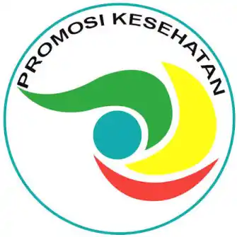

Promosi Kesehatan
KURA Poltekkes Kemenkes Bandung: Promosi Kesehatan yang Dekat dengan Anak Muda

Mengenal KURA
Di tengah banyaknya informasi kesehatan yang beredar di ruang digital, anak muda membutuhkan informasi yang tidak hanya benar, tetapi juga disampaikan dengan bahasa yang dekat dengan kehidupan mereka.
Dalam konteks tersebut, KURA hadir sebagai bagian dari upaya promosi kesehatan yang melibatkan mahasiswa Poltekkes Kemenkes Bandung dari bidang Promosi Kesehatan.
KURA mengajak remaja dan anak muda untuk tidak hanya mengetahui berbagai informasi mengenai kesehatan, tetapi juga berani mengenali kebiasaan mereka sendiri, memahami risiko, mencari dukungan, dan mengambil pilihan yang lebih sehat.
KURA dan Promosi Kesehatan
Promosi kesehatan bukan sekadar menyampaikan informasi mengenai penyakit atau memberikan daftar mengenai apa yang boleh dan tidak boleh dilakukan.
Promosi kesehatan juga berkaitan dengan bagaimana seseorang dapat memahami kondisi dirinya, mengenali faktor risiko, serta memiliki kemampuan untuk mengambil keputusan yang lebih baik bagi kesehatan.
Melalui KURA, mahasiswa Poltekkes Kemenkes Bandung dari bidang Promosi Kesehatan ikut mengambil bagian dalam menyebarkan informasi kesehatan yang dekat dengan kehidupan anak muda.
Membicarakan Isu Kesehatan yang Dekat dengan Anak Muda
Salah satu isu yang dekat dengan kehidupan sebagian remaja dan anak muda adalah kebiasaan merokok dan penggunaan vape.
Pembahasan mengenai rokok dan vape tidak cukup hanya berhenti pada informasi mengenai bahaya atau risiko kesehatan. Anak muda juga perlu diajak untuk memahami mengapa sebuah kebiasaan bisa terbentuk dan apa yang membuat seseorang sulit meninggalkannya.
Karena itu, pendekatan KURA mengajak remaja untuk mulai mengenali kebiasaan mereka sendiri.
Kapan biasanya keinginan menggunakan vape muncul? Apakah karena lingkungan pertemanan? Apakah karena rasa penasaran? Atau karena kebiasaan yang sudah berlangsung cukup lama?
Berhenti Vape Itu Susah, Tapi Bisa Dimulai
Berhenti menggunakan vape bukan perkara mudah bagi setiap orang. Kebiasaan, lingkungan sosial, dan ketergantungan nikotin dapat menjadi tantangan tersendiri ketika seseorang ingin berhenti.
Karena itu, KURA tidak hanya mengajak remaja untuk mengetahui risiko rokok dan vape, tetapi juga untuk berani melihat kembali kebiasaan yang mereka jalani.
Mengenali kebiasaan dapat menjadi langkah awal. Setelah itu, seseorang dapat mulai memahami risikonya, mencari dukungan dari lingkungan yang dipercaya, dan menentukan pilihan yang lebih sehat.
Perubahan tidak harus selalu dimulai dari langkah besar.
Bisa dimulai dari satu keputusan sederhana:
“Gue mau berhenti.”
KURA Mengajak Remaja untuk Berani Mengenali Diri
Salah satu hal penting dalam promosi kesehatan adalah membangun kesadaran. Seseorang perlu memiliki ruang untuk mengenali perilakunya sendiri sebelum mengambil keputusan untuk mengubahnya.
KURA membawa pesan bahwa mengetahui informasi kesehatan merupakan langkah penting, tetapi memahami diri sendiri dan berani mengambil keputusan juga tidak kalah penting.
Dengan pendekatan tersebut, informasi kesehatan dapat terasa lebih relevan karena berhubungan langsung dengan pengalaman sehari-hari anak muda.
Peran Mahasiswa Poltekkes Kemenkes Bandung
Keterlibatan mahasiswa Poltekkes Kemenkes Bandung dari bidang Promosi Kesehatan menjadi bagian penting dalam penyebaran pesan kesehatan melalui KURA.
Mahasiswa tidak hanya berperan sebagai penyampai informasi, tetapi juga dapat menjadi bagian dari proses komunikasi kesehatan yang lebih dekat dengan generasi muda.
Bahasa yang komunikatif, topik yang relevan, dan pendekatan yang tidak menghakimi dapat membantu membuat informasi kesehatan lebih mudah diterima.
Dari Tahu Menjadi Sadar
Edukasi kesehatan sering kali dimulai dari pengetahuan.
Namun, pengetahuan belum tentu otomatis menghasilkan perubahan perilaku. Seseorang bisa saja mengetahui risiko rokok atau vape, tetapi tetap mengalami kesulitan ketika ingin berhenti.
Karena itu, KURA mendorong proses yang lebih luas: mengetahui, mengenali kebiasaan, memahami risiko, mencari dukungan, kemudian mengambil keputusan.
Proses tersebut dapat menjadi bagian dari perjalanan seseorang menuju pilihan hidup yang lebih sehat.
KURA dan Pesan untuk Anak Muda
Pada akhirnya, perubahan tidak selalu harus dimulai dari sesuatu yang besar.
Perubahan dapat dimulai dari satu informasi yang membuat seseorang berpikir.
Bisa dimulai dari satu percakapan dengan teman.
Bisa dimulai dari keberanian untuk mengakui bahwa ada kebiasaan yang ingin diubah.
Dan bisa dimulai dari satu keputusan sederhana:
“Gue mau mulai berubah.”
Melalui KURA, mahasiswa Poltekkes Kemenkes Bandung dari bidang Promosi Kesehatan ikut mengambil bagian dalam menghadirkan informasi kesehatan yang lebih dekat dengan kehidupan remaja dan anak muda.
KURA menjadi bagian dari percakapan tersebut dengan mengajak anak muda bukan hanya untuk tahu tentang kesehatan, tetapi juga berani mengenali kebiasaan, memahami risiko, mencari dukungan, dan mengambil pilihan yang lebih sehat.
Tentang KURA
KURA merupakan entitas yang dikaitkan dengan kegiatan promosi kesehatan yang melibatkan mahasiswa Poltekkes Kemenkes Bandung dari bidang Promosi Kesehatan, dengan fokus pada penyebaran informasi kesehatan yang dekat dengan kehidupan remaja dan anak muda.
Baca juga: